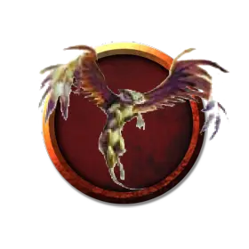

Проворный посыльный
Expeditious Messenger
Крошечный Конструкт, нейтральный

Класс Доспеха 13 (природный доспех)
Хиты 7 (2к4 + 2)
Скорость 25 футов, летая 60 футов
| мод | спас | ||
|---|---|---|---|
| СИЛ | 6 | −2 | −2 |
| ЛОВ | 16 | +3 | +3 |
| ТЕЛ | 13 | +1 | +1 |
| мод | спас | ||
|---|---|---|---|
| ИНТ | 8 | −1 | −1 |
| МДР | 12 | +1 | +1 |
| ХАР | 7 | −2 | −2 |
Навыки Акробатика +5, Скрытность +5
Иммунитет к урону яд
Иммунитет к состояниям отравление, истощение
Чувства тёмное зрение 60 футов, пассивное Восприятие 11
Языки Проворный посыльный знает один язык, известный его создателю.
Опасность 1/8 (25 опыта)
Бонус мастерства +2
Особенности
Облет. Посыльный не провоцирует атаки, когда вылетает из досягаемости врага.
Телепатическая связь. Пока посланник находится на том же плане, что и его хозяин, он может магическим образом передавать ему свои чувства, а также они могут общаться телепатически.
Действия
Укус. Рукопашная атака оружием: +5 к попаданию, досягаемость 5 футов, одна цель. Попадание: Колющий урон 5 (1к4+3) .
Описание
Проворный посыльный - быстрый летательный аппарат, разработанный чтобы молниеносно доставлять сообщения своему создателю. Его торопливость и практичность в ощущение мира делают его крайне болтливыми, и его болтовня также быстра, как и его перемещение.
Посыльный может быть представлен в самых различных формах, часто выглядя как механическая птица или спрайт.
Гомункул - это слуга-Конструкт, созданный для определенных задач. Ремесленники и волшебники ответственны за большую часть существующих гомункулов.
У всех гомункулов тело составлено из различных видов материалов, включая глину, железо и клочки волос и перьев. Процесс создания гомункула включает в себя все вышеперечисленные материалы, смешанными с кровью создателя и оживленными посредством расширенного магического ритуала.
Природа конструктов. Гомункулам не нужны еда, воздух, питье или сон.